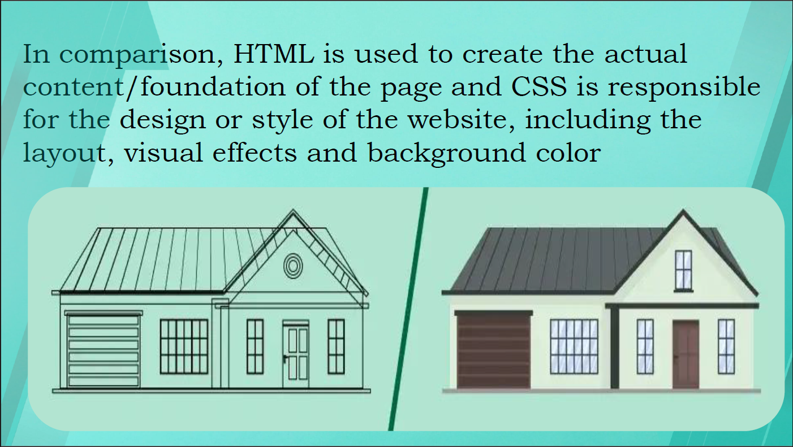
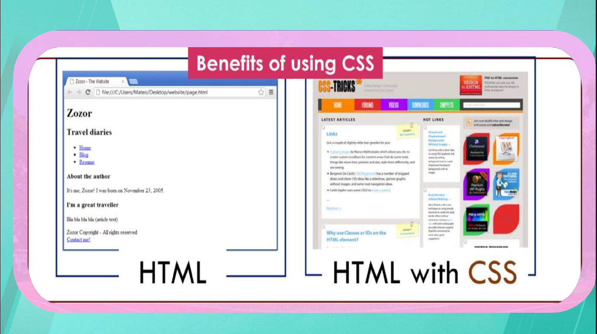

Browser Output and Reflection on Lesson 1
Reflection: In this lesson, I learned that CSS stands for Cascading Style Sheets and is used to design and style web pages. It helps separate a website’s content from its presentation, making pages easier to maintain and more attractive. CSS can control the layout, color, and design of multiple web pages at once, saving time and keeping everything consistent. I also learned about the three layers of a webpage: the content layer (HTML), the presentation layer (CSS), and the behavior layer (JavaScript). Overall, CSS is important because it improves website appearance, efficiency, and user experience.
Here are some photos about using css.

